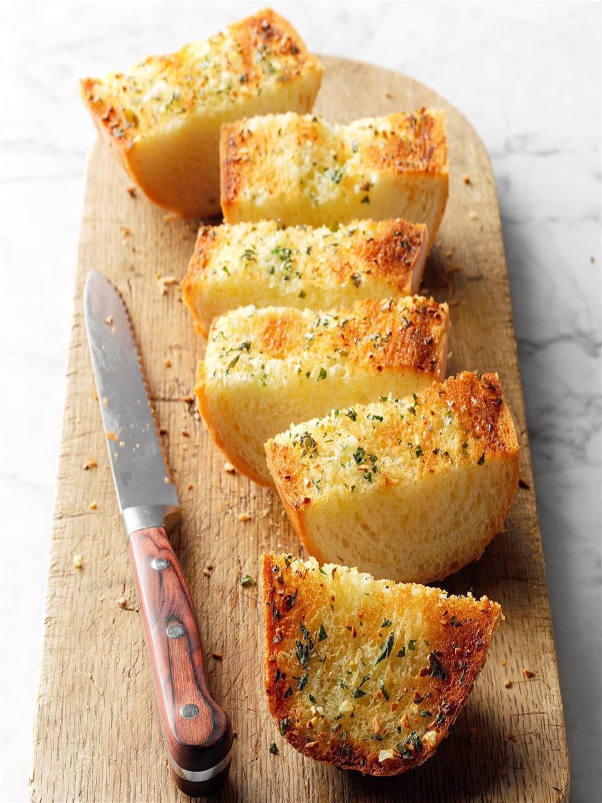

Garlic Bread

Description
Ever wonder how to make garlic bread? This homemade garlic bread is the answer! Minced fresh garlic is key to these flavor-packed crusty slices, which our big family would snap up before they even had a chance to cool
Ingredients
- 1/2 cup butter, melted
- 3 to 4 garlic cloves, minced
- 1 loaf French bread, halved lengthwise
- 2 tablespoons minced fresh parsley
Steps
- In a small bowl, combine butter and garlic. Brush over cut sides of bread; sprinkle with parsley. Place, cut side up, on a baking sheet.
- Bake at 350° for 8 minutes. Broil 4-6 in. from the heat for 2 minutes or until golden brown. Serve warm.